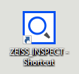
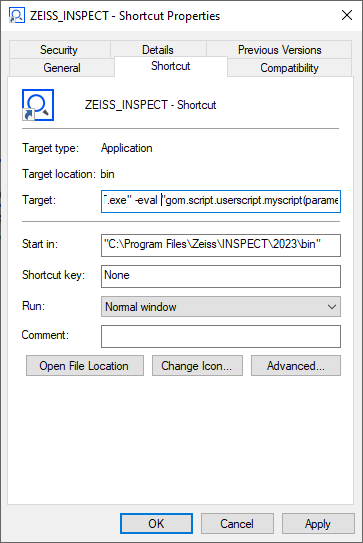
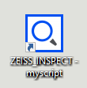
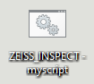
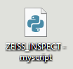

Software and script starting options
Abstract: This chapter deals with various ways to start ZEISS INSPECT and optionally execute a script. The most common way is to start ZEISS INSPECT and execute a script from the ZEISS INSPECT GUI. You can also start the application from the Windows command line, a Windows shortcut or a batch file. And finally you can start the application from another Python script running in an external Python interpreter.
Starting Apps from the GUI
You normally start the ZEISS INSPECT application from the ZEISS Quality Suite. In ZEISS INSPECT, you start a script
From the App Editor
Via App ► Execute Script
Via App ► Execute Script From File…
From a customized entry in the menu bar (Script properties dialog ► Edit menu bar… - see ZEISS Quality Tech Guide: How to Create an Advanced Add-on for details)
Starting a script from the Windows command line
Basic command line options
You start ZEISS INSPECT from the command line with
"C:\Program Files\Zeiss\INSPECT\2023\bin\ZEISS_INSPECT.exe"
This will start the application with all available licenses. You can specify the desired licenses with the parameter -license, e.g.
"C:\Program Files\Zeiss\INSPECT\2023\bin\ZEISS_INSPECT.exe" -license volume
By default, all licensed Apps with a valid license and all license-free Apps are visible in the application. This can be changed with the parameter -packages, which restricts the visible Apps to those listed by UUID:
"C:\Program Files\Zeiss\INSPECT\2023\bin\ZEISS_INSPECT.exe" -packages 36687b47-6ee0-448c-886a-eba02c9d0329,a8c6baec-c6ed-409d-a2dc-dd3d032db8bd
You find the UUID in the App’s metainfo.json file.
You can reduce the software startup time by skipping the splash screen with the parameter -nosplash.
The initial appearance of the ZEISS INSPECT window can be set with the parameters -minimized, -maximized and -fullscreen.
The software configuration is stored in the file %APPDATA%\GOM\<VERSION>\gomsoftware.cfg. You can make a copy of the configuration created for a special purpose and later apply it with the parameter -config:
"C:\Program Files\Zeiss\INSPECT\2023\bin\ZEISS_INSPECT.exe" -config C:\temp\my_inspection.cfg
Caution
The configuration file contains user- and language-specific entries which limit its portability. Compatibility across different software versions - even minor versions - is not guaranteed. Depending on the actual use case, some entries may have to be deleted or modified.
Starting ZEISS INSPECT Python scripts
You start ZEISS INSPECT and execute a script with -eval "gom.script.userscript.<scriptfolder>__<script>()"
Example: <App_Folder>/scripts/tools/convert_mesh.py
"C:\Program Files\Zeiss\INSPECT\2023\bin\ZEISS_INSPECT.exe" -eval "gom.script.userscript.tools__convert_mesh()"
<scriptfolder> can be omitted if the script is located in an App scripts/ folder:
"C:\Program Files\Zeiss\INSPECT\2023\bin\ZEISS_INSPECT.exe" -eval "gom.script.userscript.convert_mesh()"
If the script’s name is not unique within all installed Apps and connected App folders, you can also execute the script by specifying its file path with the parameter -script:
"C:\Program Files\Zeiss\INSPECT\2023\bin\ZEISS_INSPECT.exe" -script "C:\temp\convert.py"
Passing parameters to a script
You can execute a script with parameters by passing a Python dictionary to it:
"C:\Program Files\Zeiss\INSPECT\2023\bin\ZEISS_INSPECT.exe" -eval "gom.script.userscript.myscript(parameters={'variable_1':'value_1','variable_2':'value_2'})"
In the script, you can access the variables directly by name:
Example: myscript.py
if hasattr(gom, 'read_parameters'):
gom.read_parameters(globals())
var1 = variable_1
var2 = variable_2
You can assign values of any Python data type to those parameters.
Important
In ZEISS INSPECT 2025 and later versions, the command gom.read_parameters(globals()) is required to make the parameters available in the App.
To allow simple testing in the App editor during script development, you add the following code to define the variables which are set as script parameters otherwise :
# Default parameters for testing
if 'variable_1' not in globals() or 'variable_2' not in globals():
variable_1 = 'default_value_1'
variable_2 = 'default_value_2'
Non-interactive script execution
In some cases, you want to run a script without user interaction. If applicable, replace interactive commands with script commands, e.g. use
gom.script.automation.execute_active_measurement_series (clear_measurement_data=True)
instead of
gom.interactive.automation.execute_active_measurement_series (clear_measurement_data=True)
Starting ZEISS INSPECT with a Windows shortcut
Create a Windows shortcut of the application (e.g.
C:\\Program Files\\Zeiss\\INSPECT\\2023\\bin\\ZEISS_INSPECT.exe)

Add the command line parameters in the ‘Target’ field of the shortcut properties

Optional: Rename the shortcut according to the script to be executed

Starting ZEISS INSPECT from a batch file
You can create a batch file to start ZEISS INSPECT for executing a script. This is especially useful, if the script execution is part of a sequence of operations.

Create a batch file (e.g. ZEISS_INSPECT_myscript.bat) with a text editor and insert your command line:
"C:\Program Files\Zeiss\INSPECT\2023\bin\ZEISS_INSPECT.exe" -eval "gom.script.userscript.myscript(parameters={'variable_1':'value_1','variable_2':'value_2'})"
Executing this batch file will open a Command Prompt window. If this is not desired, start the application with the Windows start command:
start \b "" "C:\Program Files\Zeiss\INSPECT\2023\bin\ZEISS_INSPECT.exe" -eval "gom.script.userscript.myscript(parameters={'variable_1':'value_1','variable_2':'value_2'})"
start \b starts an application without opening a new Command Prompt window.
Starting ZEISS INSPECT as a subprocess in a Python script
ZEISS INSPECT comes with its own Python interpreter (C:\Program Files\Zeiss\INSPECT\2023\python) for executing scripts. You can use this Python installation - or an external Python installation - to start ZEISS INSPECT.

Example: ZEISS_INSPECT_myscript.py
import subprocess
subprocess.run(["C:/Program Files/Zeiss/INSPECT/2023/bin/ZEISS_INSPECT.exe", "-eval", "gom.script.userscript.myscript(parameters={'variable_1':'value_1','variable_2':'value_2'})"], check=False)
Note
You must use forward slashes in the application file path. The command line is split into an array of strings.
See Python subprocess documentation for more details.
Executing a Python script from an App
The command gom.script.sys.execute_script() can be used to run another Python script from an App.
- gom.script.sys.execute_script(file: string, parameters: dict, collect_stdout: bool, collect_stderr: bool) : string
Execute Script From File
- Parameters:
file – Script file path.
parameters (dict) – Parameters passed to the script. The keys/value pairs define global variables and their contents provided to the script (default: None).
collect_stdout (bool) – If True, provide script’s output to stdout as return value (default: False).
collect_stderr (bool) – If True, provide script’s output to stderr as return value (default: False).
- Returns:
depending on parameters collect_stdout and collect_stderr
- Return type:
string
import gom
FILE = "C:/temp/testscript.py"
# Return None
res = gom.script.sys.execute_script(file=FILE)
print(res)
# Return stdout
res = gom.script.sys.execute_script(file=FILE, collect_stdout=True)
print(res)
# Return stdout and stderr
res = gom.script.sys.execute_script(file=FILE, collect_stdout=True, collect_stderr=True)
print(res)
# Pass parameters
res = gom.script.sys.execute_script(
file=FILE,
parameters={"geometry": "circle", "radius": "42"},
collect_stdout=True)
print(res)
import sys
print(f'sys.argv: {sys.argv}')
# Two possible ways to check for parameters...
# Option 1
if 'geometry' in globals():
print(f'Name: {geometry}')
# Option 2
try:
print(f'radius: {radius}')
except NameError:
pass
print("This is a normal message")
print("This is an error message", file=sys.stderr)
None
sys.argv: ['C:/temp/testscript.py']
This is a normal message
sys.argv: ['C:/temp/testscript.py']
This is a normal message
This is an error message
sys.argv: ['C:/temp/testscript.py']
Name: circle
radius: 42
This is a normal message